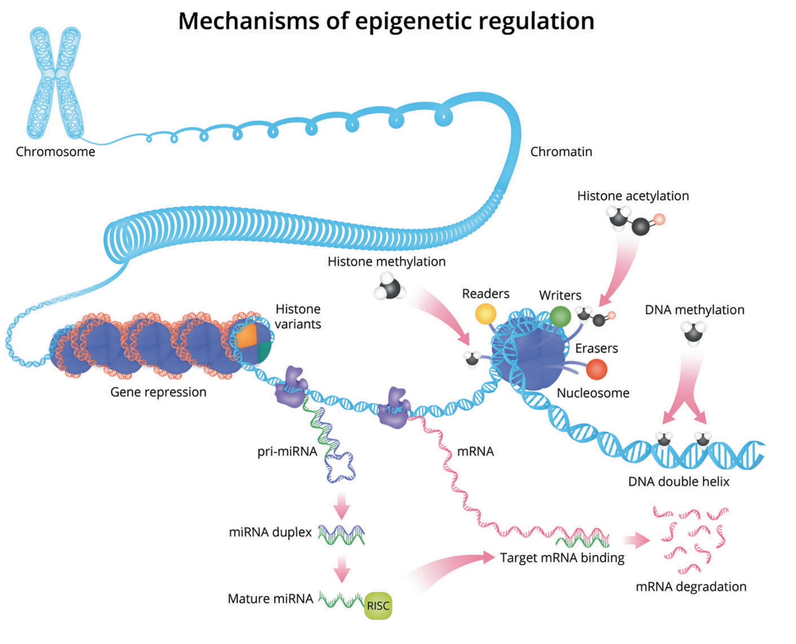

소위 조현병의 2회 충격 가설(2장 3-1절 참조)에 의하면, 유전적 요인 등으로 인해 취약성을 갖고 태어난 개인이라 할 지라도, 차후에 감당하기 어려운 심리사회적 스트레스를 받지 않는 이상 발병 위험은 그다지 높아지지 않는다. 또한 심리사회적 스트레스는 이후 재발의 계기가 되기도 한다. Meyer와 그를 따르는 20세기 전반의 미국 정신의학자들이 조현병을 “조현병적 반응(schizophrenic reaction)”이라고 불렀던 것은, 아무리 조현병이 뇌질환이라 할 지라도, 개인이 자신을 둘러싼 환경이나 주어진 상황에 제대로 적응하지 못해 생긴 문제라고 믿었기 떄문이다. (1장 2-2절 참조)
아무리 조현병을 생물학적 질환으로 이해하고자 해도, 심리사회적 스트레스가 발병 및 재발에 중요한 비중을 차지한다는 것을 부인할 수 없다.(Nuechterlein et al. 1992)(Corcoran et al. 2002) 그렇다면 신체와 마음, 즉 생물학적 영역과 심리학적 영역 간에 서로 영향을 주고받는 통로가 반드시 있어야만 한다. 과거에는 신경내분비 계통이 이 통로의 역할을 담당한다고 믿어졌다. 장기간에 걸쳐 심리적 고통을 겪으면 스트레스 호르몬이 과도하게 분비되고, 내분비계 조절기전이 혼란상태에 빠진다. 스트레스 호르몬은 세포내 수용체를 통해 세포 내 신호전달계를 교란시키며, 이로 인해 정상적인 신경세포의 기능발휘가 불가능해진다. 따라서 시상하부-뇌하수체-부신 축(Hypothalamic-Pituitary-Adrenal axis, HPA axis)은 조현병을 비롯한 다양한 정신질환을 이해하는데 빠지지 않고 등장하는 단골 소재가 되어 왔다.(Müller 1990)(Chan et al. 2010)
그러나 위에 연결한 경로들은 순간순간 스트레스와 뇌 기능 변화사이를 매개하는 데는 적합할 지 몰라도, 수년간에 걸쳐 장기간 지속되는 구조적 변화를 설명하기 어렵다. 조현병의 신경발달학적 가설에 따르면, 취약성을 높이는 유전자 변이는 신경회로의 구조적 이상을 낳고, 구조적 이상은 돌이키기 어려운 기능의 결함을 부른다. 하지만 취약성을 높이는 유전자 변이는 단지 발병의 확률을 조금 높일 뿐 거스를 수 없는 운명이 아니다. 게다가 취약 유전자를 물려받지 않은 경우에도 과도한 스트레스에 의해 여전히 조현병이 발생한다는 것은, 스트레스와 유전자 기능이 서로 무관하지 않음을 시사한다. 구조적 변화가 생기기 위해선 유전자 단계에서 이상이 있어야만 하는데, 그렇다고 후천적 스트레스가 신생 돌연변이를 일으키는 것은 불가능하다. 그렇다면 유전자 서열을 바꾸지 않으면서도, 유전자 기능을 켰다 껐다하는 스위치가 어딘가에는 존재해야 한다는 결론에 도달한다.
더불어 신체의 모든 세포가 애초에는 하나의 수정란에서 출발했다는 것을 상기해본다면, 유전자 정보가 같은 수많은 세포가 각기 다른 종류의 세포들로 분화되는 것 역시, 유전자 스위치의 존재를 암시한다. 후성 유전학(epigenetics)은 바로 이렇게 후천적으로 작동하는 유전자 스위치에 대한 유력한 이론이다. 후성 유전학의 발견은 개체가 갖고 있는 게놈이 개략적인 청사진일뿐, 결코 개체의 운명을 세부사항까지 못 박아 놓은 것이 아님을 분명히 해주었다. 게놈에는 수없이 많은 스위치들이 있으며, 이는 환경적 영향에 의해 켜지기도 하고, 꺼지기도 한다. 후성 유전학적 메카니즘은 개체에게 수없이 많은 가능성을 실현할 수 있도록 해주며, 따라서 변화하는 환경에 유연하게 적응하는데 없어서는 안될 기전이다.
3-2. 후성 유전학
후성 유전학 이론은 그 전까지 분자생물학을 이끌어왔던 중심 도그마, 즉 생물학적 정보는 한 방향으로만 흐른다는 원리에 과감한 도전장을 내민다.(Crick 1970) 중심 도그마에 의하면 DNA에서 RNA(전사), 그리고 RNA에서 단백질(번역)로 정보가 전달되며, 역 방향으로의 전달, 즉 단백질에서 DNA나 RNA로의 정보 전달은 일어날 수 없다. 이 이론을 확장하면, 생명체의 모든 정보는 DNA가 쥐고 있으며 염기서열이 바뀌지 않는 한 정보 자체가 변할 일은 없다는 것이다. 이에 반해 후성 유전학에서는 단백질에서 RNA로의 정보전달이 가능하며, 이를 통해 환경적 변화가 새로운 정보로서 DNA와 RNA에 기입될 수 있다고 주장한다.
인간 게놈에 포함된 DNA 중 대다수는 기능이 밝혀지지 않은 비코딩 DNA이다. 또한 설령 전사되었다 하더라도 아미노산을 만들지 않는 비코딩 RNA가 존재한다.(St Laurent and Wahlestedt 2007) 이들 코딩되지 않는 염기서열들은 코딩 영역의 전사나 발현 정도를 조절하고 있다. 그 기전은 첫째, 역시 비코딩 DNA에 위치한 CpG 영역의 메틸화, 그리고 히스톤 단백질의 메틸화를 통한 염색질 구조의 변화이다.
CpG 영역의 메틸화는 보편적인 유전자 발현 조절 기전으로 유전체 각인과 관련된 기전으로 잘 알려져 있다. 부모로부터 물려받는 한 쌍의 대립 유전자 중에서 어느 하나를 침묵시키는 것은 CpG 영역의 메틸화에 의해 결정된다. 그 밖에도 환경적 영향에 따라 후천적으로 CpG 영역이 메틸화가 되면 해당 유전자는 발현이 일시적으로 중단된다.(Jang et al. 2017)
한편 히스톤 단백질은 DNA가 염색질 구조로 존재할 수 있게 하는데 가장 중요한 역할을 하는데, 그 자신이 메틸화, 아세틸화, 유비퀴틴화 등 공유결합이 추가될 수 있다. 이렇게 공유결합이 변경되면, 히스톤의 3차원 구조가 바뀜으로써 염색질이 꼬이는 정도를 느슨하게도 팽팽하게도 변화시킬 수 있다. 예를 들어 히스톤 복합체 구성 요소 중 하나인 histone H3의 4번째 lysine이 메틸화되면 염색질이 느슨해지면서 유전자 발현이 촉진되지만, 동일한 히스톤의 9번째 혹은 27번째 lysine이 메틸화되면 반대 방향의 효과가 나타난다.(Peterson and Laniel 2004) 반대로 염색질이 팽팽하게 꼬이면 전사의 정도가 줄어들기 때문에, 이를 통해 유전자 활성을 조절할 수 있다.(J.-W. Wei et al. 2017)
현재까지 가장 활발히 연구된 후성 유전학적 조절은 위에 설명한 두 가지 기전에 의한다. 비코딩 DNA는 세포핵막 (nuclear envelope), 핵공 (nuclear pore) 혹은 핵소체(nucleolus)에 맞닿아 있는 채로 존재한다.(Mekhail and Moazed 2010) 이들이 외부로부터의 신호를 받아들이는 감지기 역할을 한다. 신호가 감지되면 후성 유전학적 기전에 따라 세포핵 내에 위치한 코딩 DNA와 이를 둘러싼 히스톤의 공유결합 변화를 불러일으킨다. 이러한 복잡다단한 조절 기전이 알려지면서, 세포핵과 그 안에 포함된 염색질이 단순한 정보 저장소가 아니라, 세포의 기능과 필요성에 따라 역동적이고 민첩하게 단백질 생성을 조절하는 고도로 특화된 기능적 단위라는 것이 명백해졌다.(Qureshi and Mehler 2010) 한가지 더 주목할만한 것은, 후성 유전학적 변화의 일부는 세대를 건너 유전될 수 있다는 점이다. 이는 DNA 염기서열을 통하지 않고도, 부모 세대의 경험이 자손 세대로 물려내려갈 수 있는 또 하나의 경로가 된다.(Lacal and Ventura 2018)
3-3. 후성 유전학과 조현병
후성 유전학과 조현병의 연관이 제기된 최초의 계기는 2차 대전 당시 나치에 의해 출입이 봉쇄되어 오랜 기간 동안 심한 기근을 겪어야만 했던 네덜란드 산모에 대한 연구였다.(Kirkbride et al. 2012) 기근이 가장 심했을 때 수정된 아이들은 기이하게도 이후 조현 스펙트럼 장애의 발생률이 유달리 높았다.(Brown and Susser 2008) 연구자들은 산모의 엽산(folic acid) 부족 가능성에 주목했는데, 그 이유는 엽산이 DNA 메틸화에 사용되는 메틸기의 주요 공급원이기 때문이다. 이때 태어난 집단이 장년이 되었을 때 DNA 메틸화 정도를 조사했는데, 몇가지 중요한 유전자에서 메틸화의 정도가 대조군과 다르다는 것이 발견되었다.(Heijmans et al. 2008)
2000년대 후반부터는 당시 취약 유전자로 알려진 몇몇 유전자의 메틸화 정도를 대조군과 비교해보려는 연구가 있었다. Reelin (RELN), catechol-O-methyltransferase (COMT), serotonin receptor type-2 (HTR2A) 등의 메틸화가 대조군과 의미있게 차이가 있었으며, 그 정도는 단백질 발현 양과도 상관관계를 보였다.(Abdolmaleky et al. 2008)(Abdolmaleky et al. 2014) 좀더 현대에 접어들면서는 개별 후보 유전자가 아니라, 광범위 유전체 연합 연구의 기법을 동원하여 게놈 전반에 퍼져있는 다량의 CpG 영역을 한꺼번에 조사하기 시작하였다. Wockner 등(Wockner et al. 2014)은 각 24명의 조현병 환자와 대조군의 사후 뇌조직에서 무려 500,000개 가까운 CpG 영역의 DNA 메틸화 정도를 측정하였다. 그 결과 3,000개 정도의 유전자에서 메틸화의 변화를 감지했는데, 여기에는 기존에 조현병의 취약 유전자로 알려진 유전자들이 대거 포함되어 있었다.
후성 유전학적 조절은 각 장기와 조직마다 다르기 때문에, 뇌 조직의 변화가 혈액에서 나타나는 변화와 동일할 수는 없다. 그러나 살아있는 환자의 뇌 조직을 검사할 수는 없기 때문에, 연구자들은 혈액 내의 후성 유전학적 지표들을 탐색하기 시작하였다. 다행히 뇌 조직과 혈구 세포에서의 후성 유전학 지표 중에 공통되는 부분이 있었기 때문에, 환자의 말초 혈액을 이용하여 개개인의 후성 유전학적 시그니처를 얻어낼 수 있다. Aberg 등(Aberg et al. 2014)은 759명의 환자와 738명의 대조군으로부터 얻어낸 후성 유전학적 시그니처를 서로 비교하였는데, 신경세포의 분화와 도파민 유전자 발현에 관여하는 FAM63B 유전자가 가장 두드러진 차이를 보였으며, 이외에도 RELN을 비롯한 다양한 유전자들이 두 군 간에 유의한 차이를 드러내었다.
비코딩 RNA 역시 전사된 다른 RNA를 분해하거나 번역을 방해함으로써 유전자 발현을 조절할 수 있다. 이중 microRNA는 중수신경계의 정상적인 발달과 성숙, 성인이 된 이후의 신경가소성이나 시냅스 기능에 중요한 역할을 한다. 조현병과 관련해서도 신경세포에 분포하는 miR-132/212, miR-219, miR-195 등이 대조군과 의미있는 차이를 보인다.(Mellios and Sur 2012) 말초 혈액의 miRNA 농도를 측정한 실험에서도 miR-130b와 miR-193-3p가 조현병 환자에서 의미있게 변화된 것이 발견되었다.(H. Wei et al. 2015)
Mechanism of Epigenetic Regulation
Adapted from (Smigielski et al. 2020)
조현병 환자의 히스톤 단백질 구조 변화에 대한 연구는 상대적으로 수가 적다. Chase 등(Chase et al. 2013)은 조현병 환자의 사후 뇌조직은 물론 말초 백혈구에서 histone H3의 9번째 lysine 메틸화가 대조군과 차이가 있음을 보고하였다. 한편 또 다른 연구에서는 조현병 환자의 말초 혈액에서 H3의 10번째 serine의 인산화 정도가 증가되었음이 관찰되었다.(Sharma, Feiner, and Chase 2015)
3-4. 후성 유전학적의 한계와 전망
세포의 기능이 단백질 발현의 양에 달려있다고 지극히 단순화시킨다 해도, 단백질 생성의 양을 조절하는 기전 또한 한없이 복잡하고 다양하다. 유전자 발현은 시시각각 달라지는 세포 외 환경에 대응하여 순발력 있게 변화하며, 이는 세포막 수용체와 세포 내부의 정교한 신호전달 네트워크의 역할에 달려있다. 항정신병 약물의 기전을 비롯하여, 질병의 병태생리와 치료기전을 이해하려는 수많은 연구자들은 이 신호전달 네트워크를 이해하기 위해 부단한 노력을 기울여왔다. 그러나 신호전달계를 통한 변화는 비교적 짧은 시간 범위에서 일어나는 것이기 때문에, 뇌 신경망의 구조적 변화와 같이 상대적으로 긴 시간 범위에서 일어나는 현상을 이해하기에는 한계가 있다.
오랜동안 학자들은 구조의 변화를 가져올 정도로 장기간 유지되는 변화는 염기서열의 변이에 의해서만 일어난다고 생각해왔다. 정신유전학은 이런 전제하에 발전해왔으며, 다양한 취약성 유전자를 발견해내는 성과를 이루었다. 그러나 조현병에 높은 빈도로 존재하는 변이 중 상당 수는 비코딩 DNA에 위치하고 있으며, 그 역할을 이해하기 어려웠다. 단백질 발현에 영향을 미치지 못하는 유전자 변이란 의미없는 변이에 불과하기 때문이다.
한편 환경적 영향 역시 이해하기 어렵기는 마찬가지이다. 물론 세포내 신호전달계는 환경적 변화를 감지하고 이에 대응하여 단백질 발현 양을 조절한다. 그러나 구조적 변화를 일으키거나, 발병을 유도할 정도로 스트레스의 영향이 장기간 유지되기 위해선, 신호전달계의 동적 변화만 갖고는 설명하기 어렵다. 후성 유전학은 이러한 두 가지 의문점에 해답을 제공할 가능성을 지니고 있다. 비코딩 DNA 중 상당 부분은 후성 유전학 조절 기전, 즉 유전자 스위치를 켜고 끄는데 관여하고 있다. 비코딩 DNA의 변이 때문에 후성 유전학적 조절 기전이 손상되거나, 혹은 특정 유전자가 장기간 억제되거나 혹은 탈억제 되면 장기간에 걸쳐 코딩 DNA의 발현이 변화되면서 발병/재발을 유도할 수 있을 것이다. 환경적 영향 역시 마찬가지이다. 스트레스가 후성 유전학적 기전에 의해 특정 유전자 발현을 장기간 억제한다면 구조적 변화에 이를 수 있을 것이다. 예를 들어 동물 실험 결과에 따르면, 갓 태어난 새끼 쥐는 엄마의 보살핌 정도에 따라 GAD1 유전자 프로모터 영역의 DNA 메틸화가 달라지며, 더불어 성인이 되었을 때에도 히스톤의 아세틸화 정도가 달라진 채로 유지된다고 한다.(Zhang et al. 2010) 인간을 대상으로 한 연구에서는, 자살자의 사후 뇌조직에서 스테로이드 수용체 유전자인 NR3C1 프로모터 영역의 DNA 메틸화를 조사했을 때, 아동기의 학대 여부와 연관되어 있음이 발견되었다.(McGowan et al. 2009)
하지만 동일한 의미에서 후성 유전학적 설명도 한계에 부딪힌다. 우선 후성 유전학적 변화가 얼마나 오랜 시간 안정적으로 유지되는 지에 대한 자료가 매우 부족하다. 이 역시 세포 외 상황에 적응하여 동적으로 변화되는 것이기 때문에, 성향(trait)을 반영한다기 보다는 상태(state)를 반영한다고 보아야 한다. 지금까지의 연구 중 대부분이 단면조사 연구(cross-sectional study)였기 때문에, 후성 유전학적 기전의 변화 양상에 대해서는 거의 아는 바가 없다. 일례로 해마에서의 DNA 메틸화는 탈분극 정도에 반응하여 변화하는데, 그렇다면 시간적 척도가 세포내 신호전달계와 별다를 바가 없다.(Nelson, Kavalali, and Monteggia 2008)
한편 대조군과 환자군 사이에서 DNA 메칠화 정도나 히스톤 단백질의 인산화 정도가 다르다는 것을 발견했다고 해도, 이를 어떻게 해석해야 할 지에 난점이 많다. 이러한 변화가 발병 과정과 관련된 것인지, 오래된 병의 결과인 것인지, 혹은 항정신병 약물에 의한 것인지 전혀 구분되지 못하고 있다. 설령 치료받지 않은 초발 정신병 환자를 대상으로 삼아, 이러한 변인을 배제할 수 있었다해도, 후성 유전학적 변화가 비코딩 DNA의 변이에 의한 것인지, 축적된 환경적 요인에 의한 것인지 구분할 방법이 존재하지 않는다. 만약 전자에 의한 것이 맞다면, 광범위 유전체 연합 연구와 차별되는 장점이 무엇인지도 확실하지 않다.
그럼에도 불구하고, 후성 유전학적 연구는 많은 가능성을 내포하고 있다. 지금까지 보편적으로 알려진 유전자 발현의 조절은 유전자 인근의 제한된 영역의 DNA에 의한다고 여겨져 왔다. 넓게 잡아 5’-UTR (5’-untranslated region)이라고 해도 몇 천 bp에 불과하다. 후성 유전학적 기전의 하나인 DNA 메틸화는 5’-UTR 내에 존재하는 CpG 영역에서 일어나지만, 히스톤 변형을 비롯한 다른 종류의 후성 유전학적 기전은 염색질의 구조 자체를 변화시키기 때문에, 훨씬 원거리 영역에서도 코딩 유전자의 발현을 조절할 수 있다.(Wood, Severson, and Meyer 2010) 이러한 원거리 조절의 가능성은 비코딩 유전자 변이의 역할을 이해하는데, 큰 기여를 할 것으로 기대된다.
현재까지 후성 유전학적 기전에 의해 일어난다고 확인된 정신과 질환은 취약 X 증후군과 레트 증후군 등 주로 정신지체를 일으키는 다양한 질환이 있다. 예를 들어 취약 X 증후군에서는 FMR1 (fragile X mental retardation 1) 유전자 프로모터에 변이가 있어서, 환자들은 CpG 영역에 염기서열 CGG가 지나치게 많이 반복된다. CG가 많으면 많을 수록 DNA 메틸화 정도가 심해지기 때문에, 환자들은 FMR1 단백질이 만들어지지 못하게 되어 발병에 이른다. 레트 증후군은 여성에게 주로 나타나는 신경 발달 장애로 X 염색체에 존재하는 MeCP2 유전자 변이에 의해서 초래된다. MeCP2는 CpG 영역의 메틸화된 DNA에 결합하여 다양한 유전자의 발현을 억제하는 역할을 한다. (Good, Vincent, and Ausió 2021) 이 밖에도, MeCP2는 히스톤 H3의 27번째 lysine을 메틸화시키기 때문에 히스톤 변형을 통한 염색질 구조 변화에 관여한다.(Lee et al. 2020) 따라서 MeCP2에 변이가 생기면 많은 수의 유전자 발현이 혼란에 빠진다. 특히 MeCP2는 신경세포가 성숙을 마친 이후에 대량으로 만들어지며, 이는 레트 증후군의 증상이 생후 6-18개월 지난 후에야 나타나는 것과 무관하지 않다.
한편 후성 유전학적 지표는 세대를 넘어서 유전된다는 특징이 있다. 앞서 기근에 빠진 산모에게서 태어난 아이들이 나중에 조현병으로 발병하는 예가 많았다는 것을 살펴보았다. 이는 신경발달학적 가설로 이해하여 태생기 뇌 발달 과정에 산모의 영양 부족이 영향을 끼쳤다고 볼 수 있지만, 후성 유전학적으로는 좀 다르게 해석할 수 있다. 즉 기근에 처한 주민들은 남녀 가릴 것 없이 기근에 적응하기 위해 후성 유전학적 기전을 사용하여 몇몇 유전자 발현을 조절하고 있었는데, 이러한 휴성 유전학적 지표가 정자와 난자를 통해 자손에게 그대로 물려내려갔을 수도 있다. 이를 확장하면 부모 대의 극심한 스트레스(예를 들어 전쟁이나 이민)가 자손의 조현병 발병 확률을 높일 수도 있다는 추론이 가능해진다.(Lacal and Ventura 2018)
후성 유전학은 아직도 초창기에 머물러 있는 생소한 학문인지라, 알려진 것보다는 아직 알지 못한 부분이 훨씬 많다. 따라서 조현병의 병태생리를 이해하는데 도움이 될 지 안 될 지 조차 분명하지 않다. 그러나 후성 유전에 기인한다고 알려진 질환의 병태 생리적 기전을 이해함으로써, 조현병의 발병 기전, 특히 심리적 스트레스가 발병을 앞당기는 이유, 청소년기 후기에 들어서야 발병에 이르는 이유, 그리고 부모 세대의 스트레스가 자손의 발병 위험에 미치는 영향 등을 밝히는데 도움이 되기를 희망한다.
Abdolmaleky, Hamid Mostafavi, Shabnam Nohesara, Mohammad Ghadirivasfi, Arthur W Lambert, Hamidreza Ahmadkhaniha, Sait Ozturk, Chen Khuan Wong, Rahim Shafa, Ashraf Mostafavi, and Sam Thiagalingam. 2014. “DNA Hypermethylation of Serotonin Transporter Gene Promoter in Drug Naïve Patients with Schizophrenia.”Schizophr. Res. 152 (2-3): 373–80. https://doi.org/10.1016/j.schres.2013.12.007.
Abdolmaleky, Hamid Mostafavi, Cassandra L Smith, Jin-Rong Zhou, and Sam Thiagalingam. 2008. “Epigenetic Alterations of the Dopaminergic System in Major Psychiatric Disorders.”Methods Mol. Biol. 448: 187–212. https://doi.org/10.1007/978-1-59745-205-2_9.
Aberg, Karolina A, Joseph L McClay, Srilaxmi Nerella, Shaunna Clark, Gaurav Kumar, Wenan Chen, Amit N Khachane, et al. 2014. “Methylome-Wide Association Study of Schizophrenia: Identifying Blood Biomarker Signatures of Environmental Insults.”JAMA Psychiatry 71 (3): 255–64. https://doi.org/10.1001/jamapsychiatry.2013.3730.
Brown, Alan S, and Ezra S Susser. 2008. “Prenatal Nutritional Deficiency and Risk of Adult Schizophrenia.”Schizophr. Bull. 34 (6): 1054–63. https://doi.org/10.1093/schbul/sbn096.
Chan, H Y, C J Chang, S C Chiang, J J Chen, C H Chen, H J Sun, H G Hwu, and M S Lai. 2010. “A Randomised Controlled Study of Risperidone and Olanzapine for Schizophrenic Patients with Neuroleptic-Induced Acute Dystonia or Parkinsonism.”J. Psychopharmacol. 24 (1): 91–98. https://doi.org/10.1177/0269881108096070.
Chase, Kayla A, David P Gavin, Alessandro Guidotti, and Rajiv P Sharma. 2013. “Histone Methylation at H3k9: Evidence for a Restrictive Epigenome in Schizophrenia.”Schizophr. Res. 149 (1-3): 15–20. https://doi.org/10.1016/j.schres.2013.06.021.
Corcoran, Cheryl, Lilianne Mujica-Parodi, Scott Yale, David Leitman, and Dolores Malaspina. 2002. “Could Stress Cause Psychosis in Individuals Vulnerable to Schizophrenia?”CNS Spectr. 7 (1): 33–38, 41–42. https://doi.org/10.1017/s1092852900022240.
Cota, D. 2008. “The Role of the Endocannabinoid System in the Regulation of Hypothalamic-Pituitary-Adrenal Axis Activity.”J. Neuroendocrinol. 20 Suppl 1 (May): 35–38. https://doi.org/10.1111/j.1365-2826.2008.01673.x.
Good, Katrina V, John B Vincent, and Juan Ausió. 2021. “MeCP2: The Genetic Driver of Rett Syndrome Epigenetics.”Front. Genet. 12 (January): 620859. https://doi.org/10.3389/fgene.2021.620859.
Heijmans, Bastiaan T, Elmar W Tobi, Aryeh D Stein, Hein Putter, Gerard J Blauw, Ezra S Susser, P Eline Slagboom, and L H Lumey. 2008. “Persistent Epigenetic Differences Associated with Prenatal Exposure to Famine in Humans.”Proc. Natl. Acad. Sci. U. S. A. 105 (44): 17046–49. https://doi.org/10.1073/pnas.0806560105.
Jang, Hyun Sik, Woo Jung Shin, Jeong Eon Lee, and Jeong Tae Do. 2017. “CpG and Non-CpG Methylation in Epigenetic Gene Regulation and Brain Function.”Genes 8 (6). https://doi.org/10.3390/genes8060148.
Kirkbride, James B, Ezra Susser, Marija Kundakovic, Jacob K Kresovich, George Davey Smith, and Caroline L Relton. 2012. “Prenatal Nutrition, Epigenetics and Schizophrenia Risk: Can We Test Causal Effects?”Epigenomics 4 (3): 303–15. https://doi.org/10.2217/epi.12.20.
Lacal, Irene, and Rossella Ventura. 2018. “Epigenetic Inheritance: Concepts, Mechanisms and Perspectives.”Front. Mol. Neurosci. 11 (September): 292. https://doi.org/10.3389/fnmol.2018.00292.
Lee, Wooje, Jeeho Kim, Jung-Mi Yun, Takbum Ohn, and Qizhi Gong. 2020. “MeCP2 Regulates Gene Expression Through Recognition of H3K27me3.”Nat. Commun. 11 (1): 3140. https://doi.org/10.1038/s41467-020-16907-0.
McGowan, Patrick O, Aya Sasaki, Ana C D’Alessio, Sergiy Dymov, Benoit Labonté, Moshe Szyf, Gustavo Turecki, and Michael J Meaney. 2009. “Epigenetic Regulation of the Glucocorticoid Receptor in Human Brain Associates with Childhood Abuse.”Nat. Neurosci. 12 (3): 342–48. https://doi.org/10.1038/nn.2270.
Mekhail, Karim, and Danesh Moazed. 2010. “The Nuclear Envelope in Genome Organization, Expression and Stability.”Nat. Rev. Mol. Cell Biol. 11 (5): 317–28. https://doi.org/10.1038/nrm2894.
Mellios, Nikolaos, and Mriganka Sur. 2012. “The Emerging Role of microRNAs in Schizophrenia and Autism Spectrum Disorders.”Front. Psychiatry 3 (April): 39. https://doi.org/10.3389/fpsyt.2012.00039.
Mizoguchi, K, M Yuzurihara, A Ishige, H Sasaki, D H Chui, and T Tabira. 2000. “Chronic Stress Induces Impairment of Spatial Working Memory Because of Prefrontal Dopaminergic Dysfunction.”J. Neurosci. 20 (4): 1568–74.
Muguruza, Carolina, Benito Morentin, J Javier Meana, Stephen Ph Alexander, and Luis F Callado. 2019. “Endocannabinoid System Imbalance in the Postmortem Prefrontal Cortex of Subjects with Schizophrenia.”J. Psychopharmacol. 33 (9): 1132–40. https://doi.org/10.1177/0269881119857205.
Müller, E E. 1990. “The Neuroendocrine Approach to Psychiatric Disorders: A Critical Appraisal.”J. Neural Transm. Gen. Sect. 81 (1): 1–15. https://doi.org/10.1007/BF01245441.
Nelson, Erika D, Ege T Kavalali, and Lisa M Monteggia. 2008. “Activity-Dependent Suppression of Miniature Neurotransmission Through the Regulation of DNA Methylation.”J. Neurosci. 28 (2): 395–406. https://doi.org/10.1523/JNEUROSCI.3796-07.2008.
Nuechterlein, K H, M E Dawson, M Gitlin, J Ventura, M J Goldstein, K S Snyder, C M Yee, and J Mintz. 1992. “Developmental Processes in Schizophrenic Disorders: Longitudinal Studies of Vulnerability and Stress.”Schizophr. Bull. 18 (3): 387–425. https://doi.org/10.1093/schbul/18.3.387.
Pani, L, A Porcella, and G L Gessa. 2000. “The Role of Stress in the Pathophysiology of the Dopaminergic System.”Mol. Psychiatry 5 (1): 14–21. https://doi.org/10.1038/sj.mp.4000589.
Qureshi, Irfan A, and Mark F Mehler. 2010. “Impact of Nuclear Organization and Dynamics on Epigenetic Regulation in the Central Nervous System: Implications for Neurological Disease States.”Ann. N. Y. Acad. Sci. 1204 Suppl (September): E20–37. https://doi.org/10.1111/j.1749-6632.2010.05718.x.
Sharma, Rajiv P, Benjamin Feiner, and Kayla A Chase. 2015. “Histone H3 Phosphorylation Is Upregulated in PBMCs of Schizophrenia Patients in Comparison to Healthy Controls.”Schizophr. Res. 169 (1-3): 498–99. https://doi.org/10.1016/j.schres.2015.09.030.
Smigielski, Lukasz, Vinita Jagannath, Wulf Rössler, Susanne Walitza, and Edna Grünblatt. 2020. “Epigenetic Mechanisms in Schizophrenia and Other Psychotic Disorders: A Systematic Review of Empirical Human Findings.”Molecular Psychiatry 25 (8): 1718–48. https://doi.org/10.1038/s41380-019-0601-3.
St Laurent, Georges, 3rd, and Claes Wahlestedt. 2007. “Noncoding RNAs: Couplers of Analog and Digital Information in Nervous System Function?”Trends Neurosci. 30 (12): 612–21. https://doi.org/10.1016/j.tins.2007.10.002.
Wang, Q, M Wang, and H Chang. 1994. “[Isolation and Purification of Glyceraldehyde-3-Phosphate Dehydrogenase from Schistosoma Japonicum].”Zhongguo Ji Sheng Chong Xue Yu Ji Sheng Chong Bing Za Zhi 12 (4): 262–64.
Wei, Hui, Yanbo Yuan, Sha Liu, Cheng Wang, Fude Yang, Zheng Lu, Chuanyue Wang, et al. 2015. “Detection of Circulating miRNA Levels in Schizophrenia.”Am. J. Psychiatry 172 (11): 1141–47. https://doi.org/10.1176/appi.ajp.2015.14030273.
Wei, Jian-Wei, Kai Huang, Chao Yang, and Chun-Sheng Kang. 2017. “Non-Coding RNAs as Regulators in Epigenetics (Review).”Oncol. Rep. 37 (1): 3–9. https://doi.org/10.3892/or.2016.5236.
Wockner, L F, E P Noble, B R Lawford, R Mcd Young, C P Morris, V L J Whitehall, and J Voisey. 2014. “Genome-Wide DNA Methylation Analysis of Human Brain Tissue from Schizophrenia Patients.”Transl. Psychiatry 4 (January): e339. https://doi.org/10.1038/tp.2013.111.
Wood, Andrew J, Aaron F Severson, and Barbara J Meyer. 2010. “Condensin and Cohesin Complexity: The Expanding Repertoire of Functions.”Nat. Rev. Genet. 11 (6): 391–404. https://doi.org/10.1038/nrg2794.
Zhang, Tie-Yuan, Ian C Hellstrom, Rosemary C Bagot, Xianglan Wen, Josie Diorio, and Michael J Meaney. 2010. “Maternal Care and DNA Methylation of a Glutamic Acid Decarboxylase 1 Promoter in Rat Hippocampus.”J. Neurosci. 30 (39): 13130–37. https://doi.org/10.1523/JNEUROSCI.1039-10.2010.